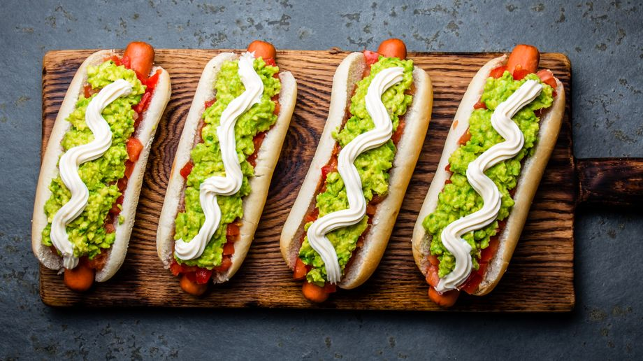

Hotdogs

A hot dog is a food consisting ofa grilled or steamed sausage served in the slit of a partially sliced bun.
Ingredients
- 1 hot dog (or as many more you need)
- 1 hot dog bun (1 for every hotdog you make
- Condiments you like (Ketchup, mustard, cheese or mayonaise)
Instructions
- In a saucepan over medium-high heat, bring enough water to cover the hotdogs to a simmer.
- Place hot dogs in the water and simmer for 8 to 10 minutes. (After you turn off your stove you can leave them in the water to keep them warm.
- Place your hot dog in the sliced open bun and top with any condiments you like.
Return to main.